Holy Shoot

I wrote the GDD for Holy Shoot from scratch. It started as one big document and slowly turned into a whole ecosystem of spreadsheets, implementation notes, and system specs. I treat a GDD as a living thing. It grows with the team and the project, not something you write once and file away.
My scope covered everything: the core loop, challenges, permanent upgrades, divine offerings, weapons, perks, enemies, bosses. Basically, if a player touches it, I designed it.
- Wrote and owned the full GDD, from core loop to bosses.
- Designed the main progression systems: Divine Offerings (permanent tree), Soul Cleansing (in-run levelling), and Challenges.
- Yes, there are explosive mushrooms and a fairy with opinions.
- Prototyped features directly in Unreal Engine Blueprints and balanced everything in data tables.
- Built perks, weapons, enemies, and bosses around the game's chaotic, slightly unhinged energy.
- Redesigned onboarding after Early Access feedback to actually teach the game without stopping the fun.
Core Game Loop
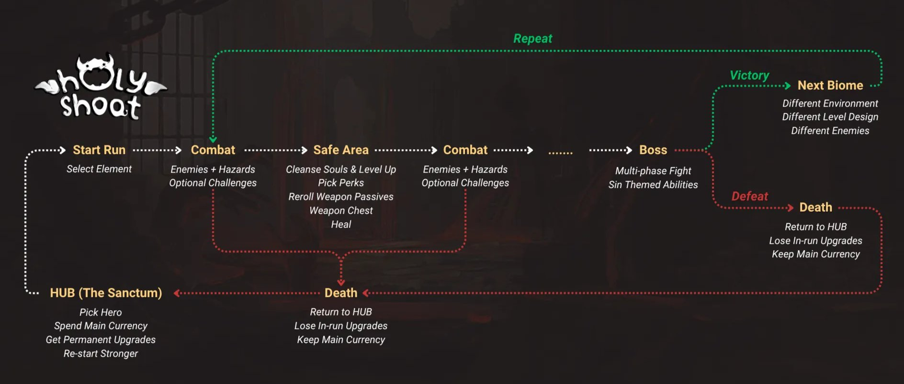
The loop follows the roguelike structure you'd expect: fight rooms, safe rooms, repeat until you win or die. But our safe rooms do a lot of heavy lifting. You level up, pick perks, swap weapons, reroll passives, and heal. All in one place. The number of rooms changes per biome so the pacing never quite feels the same twice.
The goal was for safe rooms to feel like a reward, not just a pause. If every decision you make there matters, re-entering combat should feel like a choice you made, not just the next door opening.
Element System
Before a run starts, you pick one of three elements: Thunder Lance (stuns), Frozen Grip (slows), or Wail of Fear (does exactly what it says). Each one auto-triggers on attack with a cooldown so it's always active without needing a separate button.
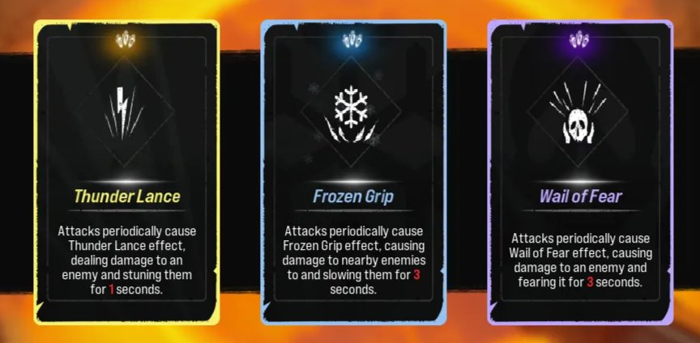

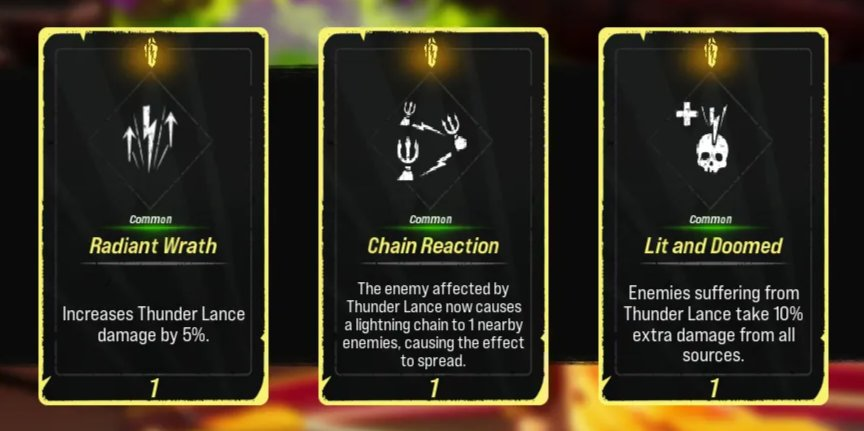
During the run, players can grab upgrade perks that boost their chosen element's damage, extend its duration, or spread it to more enemies. It's a small choice at the start of the run but it quietly shapes every pick you make after it.
The idea was that picking an element before the first room gives you a direction before anything else happens. Players would start filtering perk choices through that lens, so even a random perk pool starts to feel like it has options that fit your run.
Soul Cleansing System
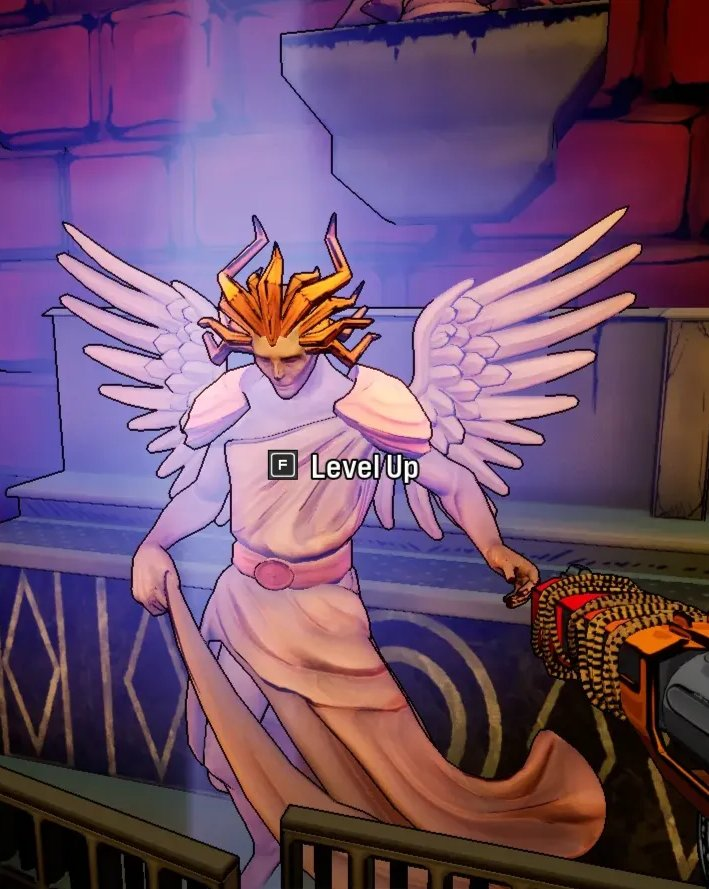
The first version used XP-on-kill to level up. It worked fine on paper but in practice, in a game this fast and chaotic, it felt like the number was just going up in the background. Nobody noticed it. So we scrapped it.
The final version is a ritual at an altar in safe rooms. You walk up, trigger it, and level up. It sounds simple but it made a big difference. I designed the flow and specs, collaborated with the programmers to build it, then tuned the balance in data tables until it felt right.
Levelling up should feel like something you did, not something that happened to you. The goal was to make it a deliberate moment so there's actual space to think about your next perk pick, rather than just being handed one mid-chaos.
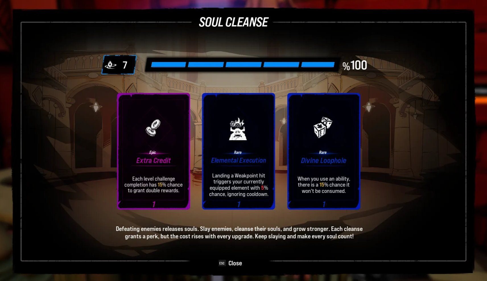
Perk Tiering & Interactions
I designed perks to push players toward distinct playstyles, even if the choices were not permanent. A single pick could tilt a player into glass cannon territory, set them up as a tanky survivor, or give them trickster-like utility. I worked closely with programmers to balance scaling and rarity, iterating directly in-engine with data tables and tuning values.
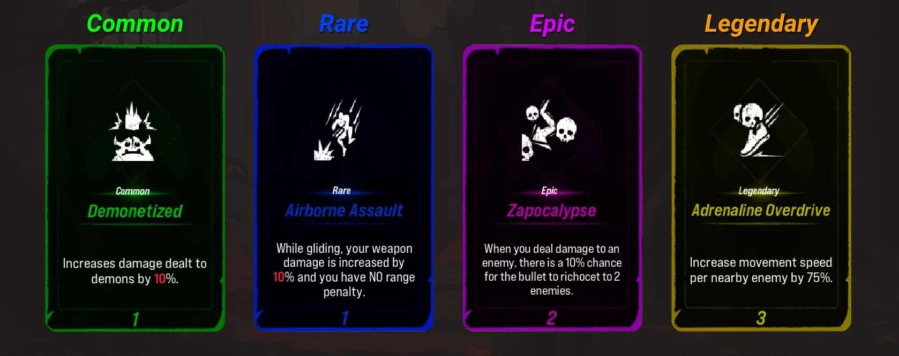
The idea was to make every pick feel impactful, shifting a run's tone completely and pushing players toward bold, playful builds.
Challenge System
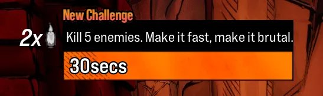
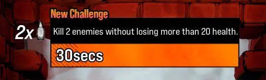
Each combat room has an optional timed challenge: survive this, kill that many, don't get hit. Complete it and you earn Divine Offerings and unlock the fairy companion for the run. Skip it and nothing bad happens. I wanted them to feel like a bonus dare, not homework.
- Prototyped in Unreal Engine Blueprints with scaling for small, medium, and large rooms.
- Dynamic quest IDs, timers, and reward logic.
- Went from handwritten notes to GDD to Blueprint prototype, then handed off to programmers for final implementation.
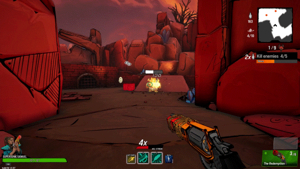
Without challenges, every room is just "kill everything and move on." The idea was to add a second thing to think about without interrupting the pace. I later redesigned them so players could trigger challenges from the safe room, giving them more agency over when they took the risk.
Divine Offering System
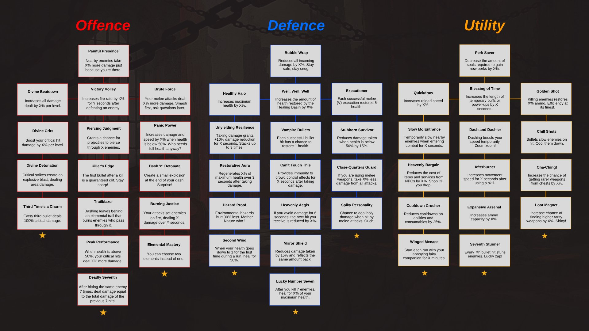
The HUB has a permanent upgrade tree with three paths. Each one builds toward a unique blessing that changes how future runs feel. You buy upgrades with Divine Offerings earned from challenges, so your in-run performance directly feeds your long-term progression.
- Designed the tree structure, node logic, and progression flow.
- Worked with programmers to hook it into the game's systems.
- Balanced costs and values through playtesting and data table iteration.
The first version had a lot of branching paths crossing into each other. It looked interesting but was genuinely hard to parse. We stripped it back to three clear paths that still support hybrid builds if you want them. Much easier to engage with.
The goal was to make failed runs still feel like they counted. If you did the challenges and earned offerings, you made progress regardless of whether you reached the boss. A bad run shouldn't feel like wasted time.
Player Characters
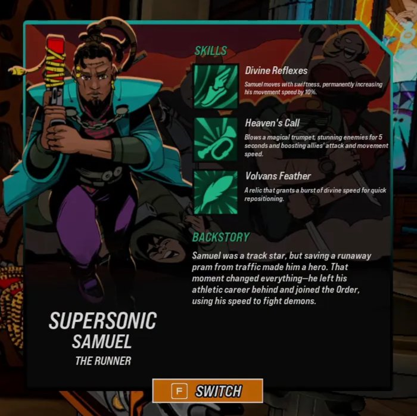
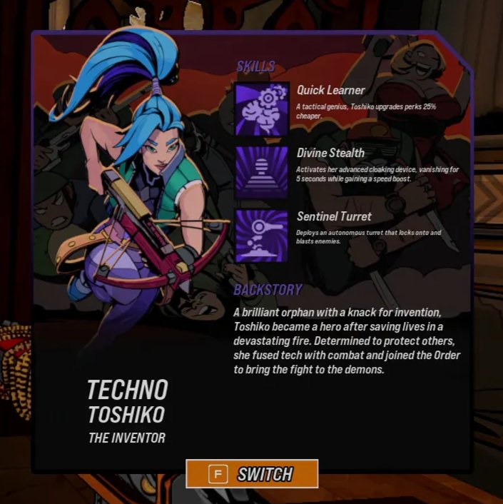
I designed four heroes for Holy Shoot, each with abilities that genuinely change how you play. Swapping characters isn't just a cosmetic choice. It changes your whole approach to a run. I wanted each one to feel like a different game mode wearing the same skin.
For co-op specifically, the goal was for two players to naturally fall into roles without needing to discuss it. Give each hero a clear enough identity and people just figure out how to complement each other on their own.
Boss Encounters & Enemies
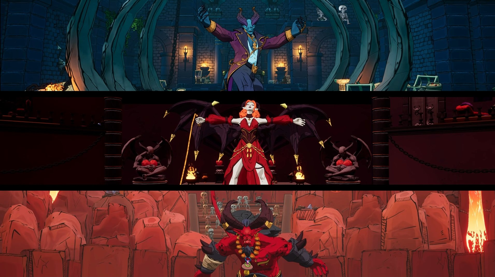
I didn't want bosses that are just big health bars. Each one is built around their sin, so the fight itself expresses what they represent.
These fights draw inspiration from Diablo 3 and 4, World of Warcraft raid and dungeon bosses, and some amazing sources like Overwatch 2 workshop modes and WoW raid training mini-games.
- Wrath's Satan: starts as a brawler, then the floor fills with lava and suddenly you can't stand still for a second.
- Lust's Asmodeus: whips, flaming hearts, a completely unbothered mocking dance mid-fight, then mirror images. Maximum chaos.
- Greed's Mammon: surfs the arena on his money bag, rains coins on you, and shockwaves you when he slams it down. Unhinged in the best way.
The goal was for the sin themes to do some of the teaching. If Greed protects space and Wrath just charges, players should be able to start reading the fight intuitively rather than needing to die a few times to figure out the pattern.
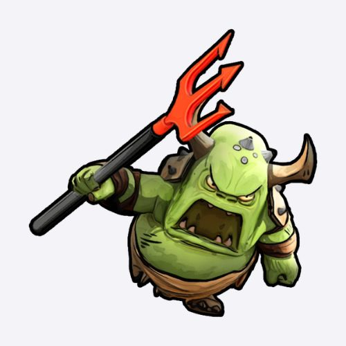
Regular enemies are built to keep you from ever fully relaxing. Fiends and Gargoyles are the baseline, but then you've got Kamikaze Fiends, Misty Fiends, Angry Shrooms, Succubi, Brutes, flaming skulls, and Conjurers. Mix a few together and players have to completely rethink their approach on the fly.
Weapons
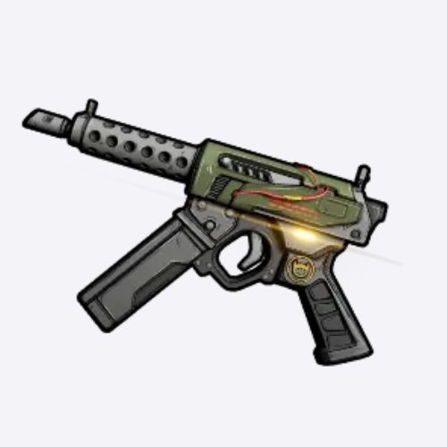
SMG
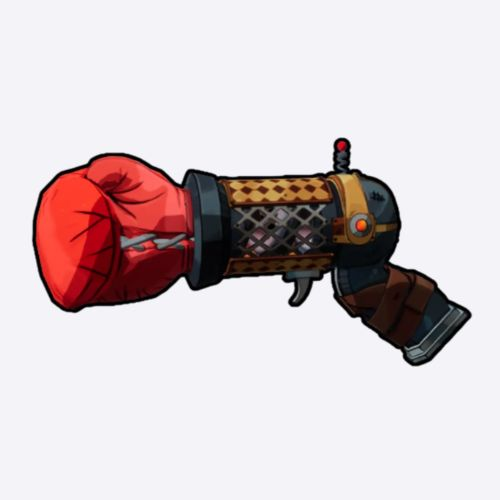
Shotgun
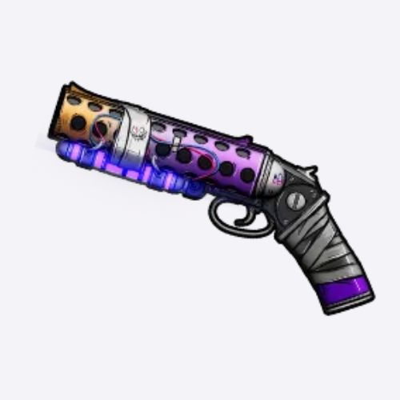
Boxing Glove Launcher
I handled the categorization, naming, perk compatibility, and scaling so each one feels like a genuine playstyle choice rather than just a numbers upgrade. Every weapon also rolls with randomized passives per run, which means the same gun can feel completely different depending on what it gets.
The randomized passives were there to make weapon drops interesting even when you've seen all the guns before. Finding your usual weapon with a weird passive should feel like a mini puzzle: do I adapt my build around this, or skip it?
After finishing the GDD, I wanted the levels to have the same richness and sense of place that I love in RPGs, even though we were making a fast-paced roguelike. I covered Wrath, Lust, Greed, and Sloth biomes, handling everything from early blockouts to final dressing, enemy placements, and technical fixes.
- Designed battle and safe rooms for Wrath, Lust, Greed, and Sloth biomes from blockout to final environment.
- Used tabletop RPG maps as a structural foundation after a GDC talk sent me down a very fun rabbit hole.
- Built prop scatter groups for each biome to reinforce theme without cluttering combat space.
- Designed and iterated the Wrath and Lust boss rooms through multiple passes.
- Handled all enemy, barrel, crystal, and collision placements for Greed, and half the rooms in Wrath and Lust.
- Yes, we put hundreds of dancing skeletons in the Wrath boss arena. Yes, it was a performance nightmare. Worth it.
Research: Tabletop RPG Maps
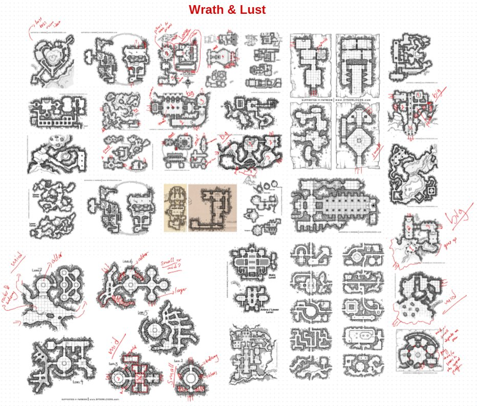
I came across a GDC talk that made a case for RPG maps as a great foundation for level design, and I got completely absorbed. I went through hundreds of tabletop maps and annotated the ones with interesting flow, natural choke points, and good combat rhythm. Those became the structural backbone for Wrath and Lust rooms.
Tabletop RPG maps are already built around player movement and decision-making. The goal was to borrow that proven flow structure so I could spend more time on tuning and atmosphere instead of solving basic navigation from scratch.
From Blockout to Environment
With the maps as reference, I built blockouts for each room first. No art, just geometry. Enough to test whether the navigation felt good, whether combat had room to breathe, and whether line of sight was doing anything interesting. Once the flow felt solid, we moved to dressing and lighting.
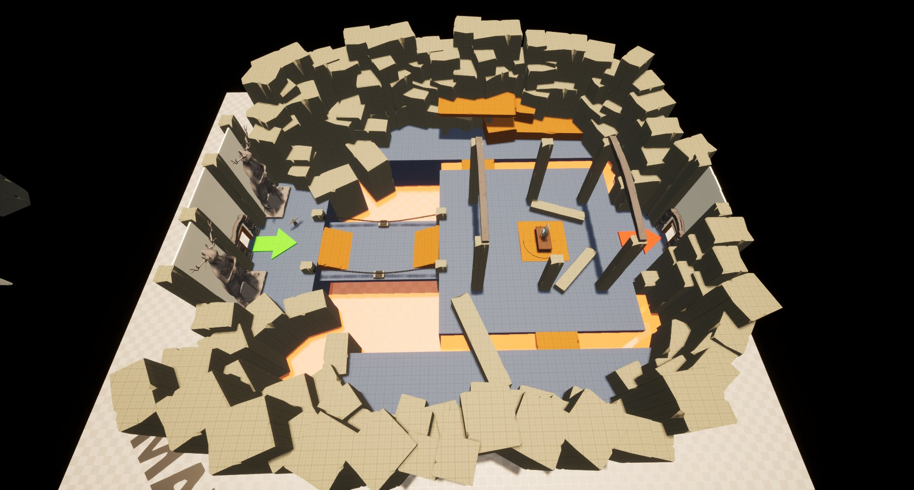
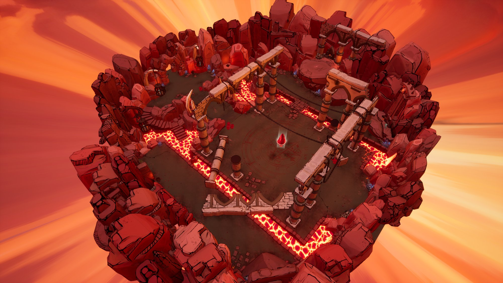
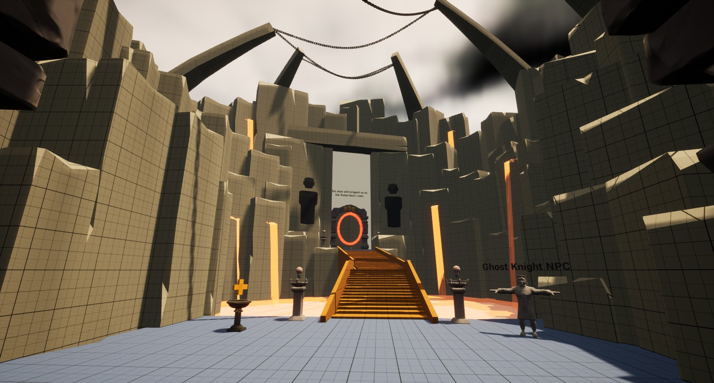
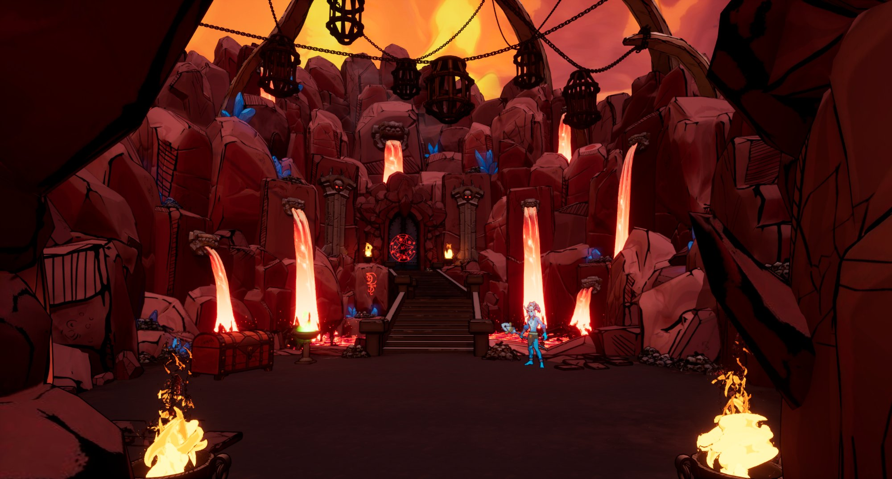
Environment Detailing
This is honestly my favorite part of level design. Once the layout is locked I start building scatter groups: small clusters of themed props that you can place in bulk to fill a space with mood without manually adjusting every single piece. For Wrath it was crystals and skulls, for Lust candles and vases, for Greed piles of gold and overflowing chests everywhere.
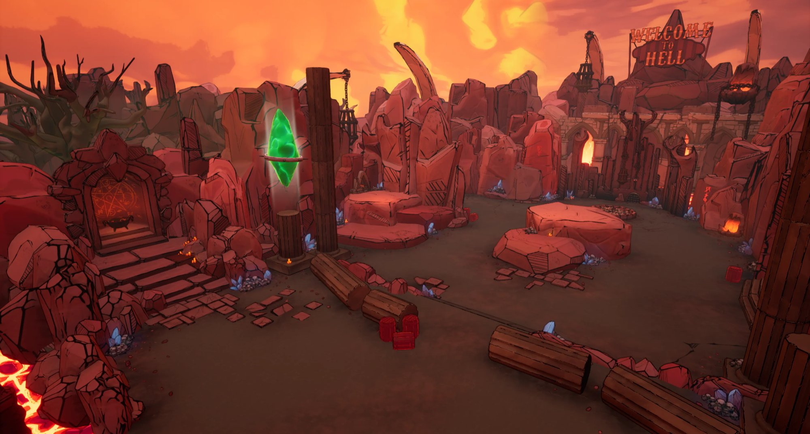
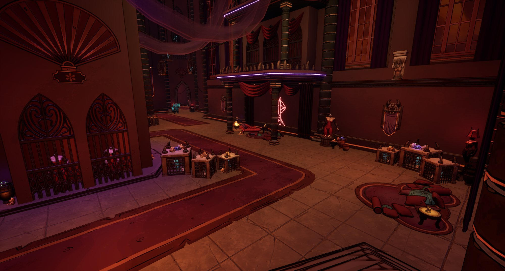
For Greed it was all about excess. Every corner had to feel like it was hiding something shiny and slightly too much.
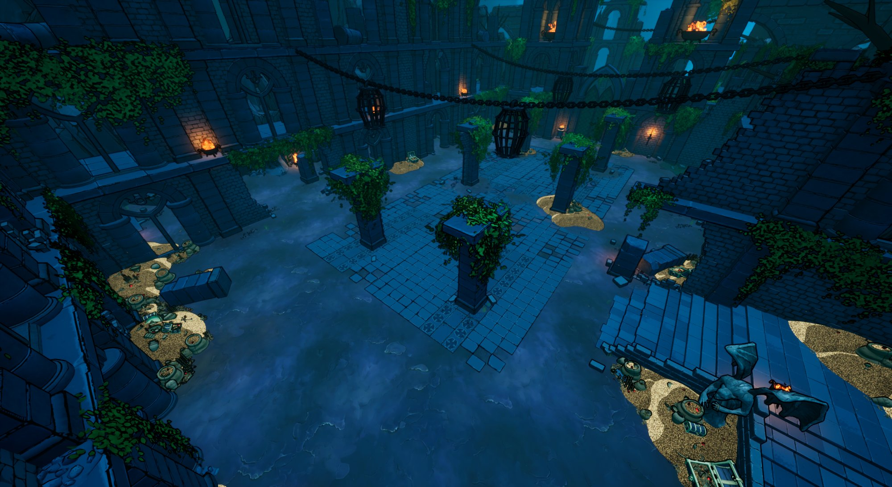
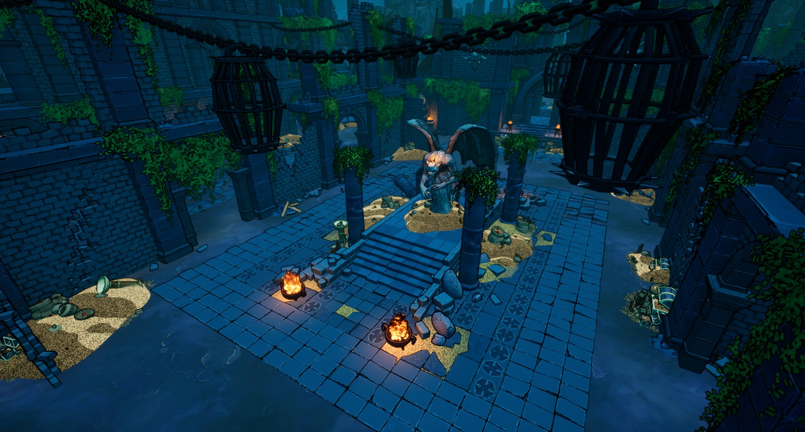
Boss Rooms
I designed and iterated the boss rooms for Wrath and Lust. Same process: blockout first, test until the movement and sightlines feel right, then layer in lighting, props, and enough environmental storytelling to make it feel like a proper stage for the fight.
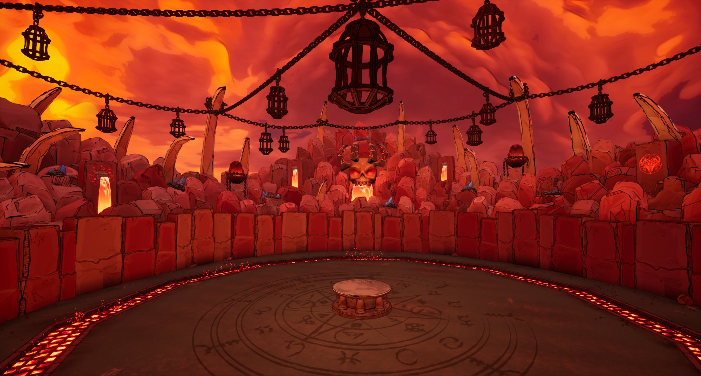
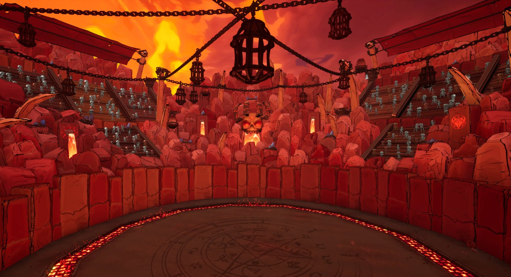
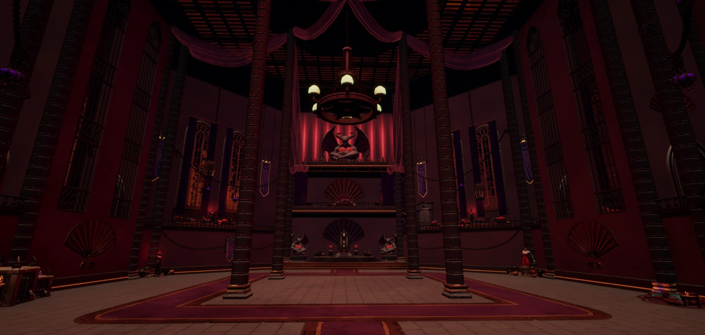
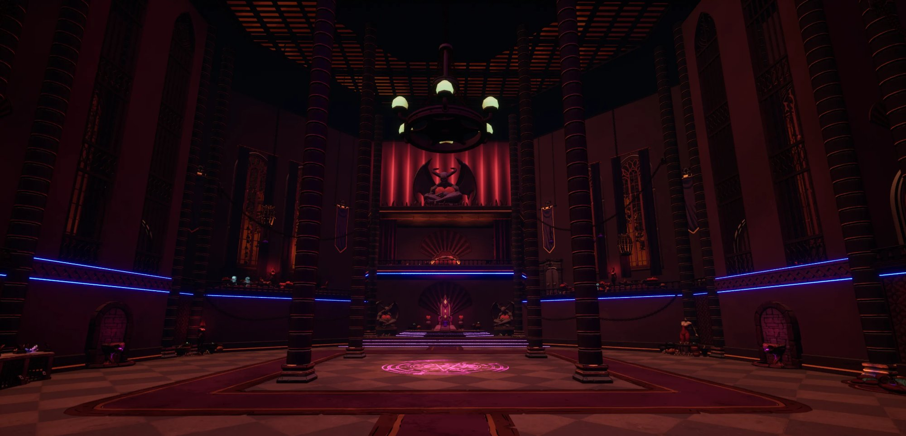
Placements
Besides shaping the rooms, I handled all the placements: enemies, power crystals, explosive barrels, collision boxes. For Greed I placed everything across the full map. In Wrath and Lust I covered half the rooms each. Every setup went through multiple passes to get difficulty and pacing right.
When placing enemies I treated each room like a mini-quest zone: who are the antagonists, what kind of fight do they create, and what's the payoff? That framing helped me keep things varied rather than just filling rooms with enemies and hoping for the best.
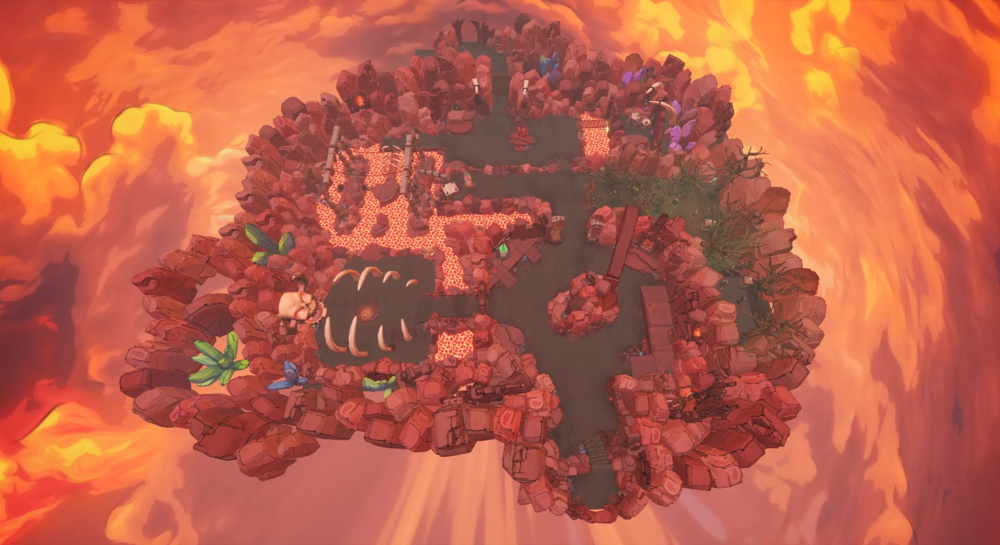
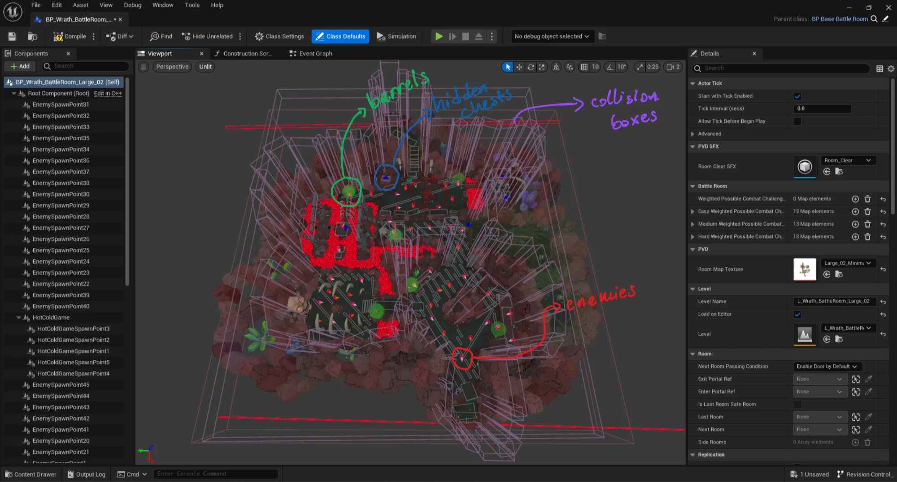
Sloth Biome
I also worked on the Sloth biome, which is still unreleased so I can't share visuals here. Designing a biome around Sloth was a genuinely fun challenge. The sin itself pushes against everything the rest of the game is doing, and figuring out how to make that feel intentional and interesting rather than just slow took a lot of iteration. Happy to talk through the approach in more detail if you're curious.
Technical Fixes & Optimization
I also handled the less glamorous side: preparing Level Instances for placement and batching, fixing baked lighting inconsistencies, and sorting out mesh texture issues. In Greed I painted terrain and used the foliage tool for dressing. Not the most exciting work but it's the kind of thing that determines whether a level actually ships in a good state.
Bonus: The Skeleton Dilemma
For Wrath's boss room, the vision was hundreds of skeletons all chilling and dancing in the stands while you fight Satan. Pure spectacle. Performance-wise it was an absolute disaster. After some research, our lead dev pulled off some developer black magic with animation materials to make it actually work. My job was pushing for that ridiculous overcrowded skeleton-packed arena feel. Seeing it in-game was unforgettable.
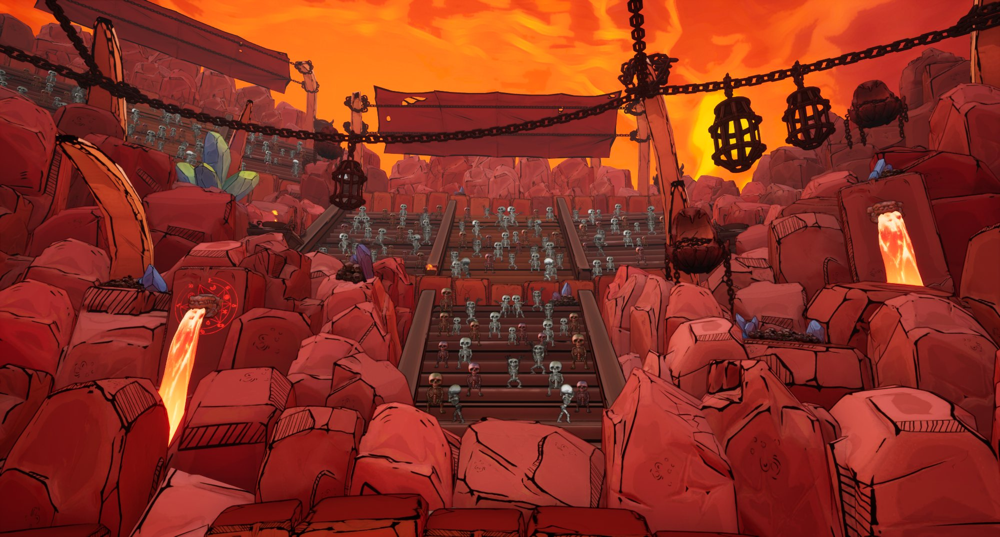
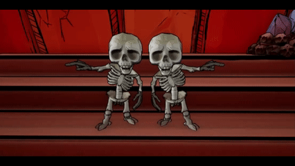
I love making things clear, useful, and fun to read. Whether it's a 125-page GDD, a quick visual note for artists, or a patch note that makes players laugh while still telling them what's changed. For Holy Shoot, I built docs that kept the whole team on the same page and dramatically cut down on me being the studio's human FAQ (😄). Below are some of the biggest and my favorite pieces.
- Wrote and maintained a 125-page GDD covering every system, character, boss, enemy, weapon, and environment in the game.
- Built a master perk and upgrade doc: designed, named, balanced, and wrote flavor text for every perk and challenge.
- Created a localization master doc with placeholder variables covering 5000+ words of in-game text and Steam copy.
- Documented every icon with bilingual (EN/TR) descriptions, mechanical notes, and icon references.
- Wrote UI/UX guides with genre benchmarks so the art team had something concrete to aim at, not just vibes.
- Stayed active with the community post-launch: patch notes, Discord, Steam reviews, the works.
The GDD
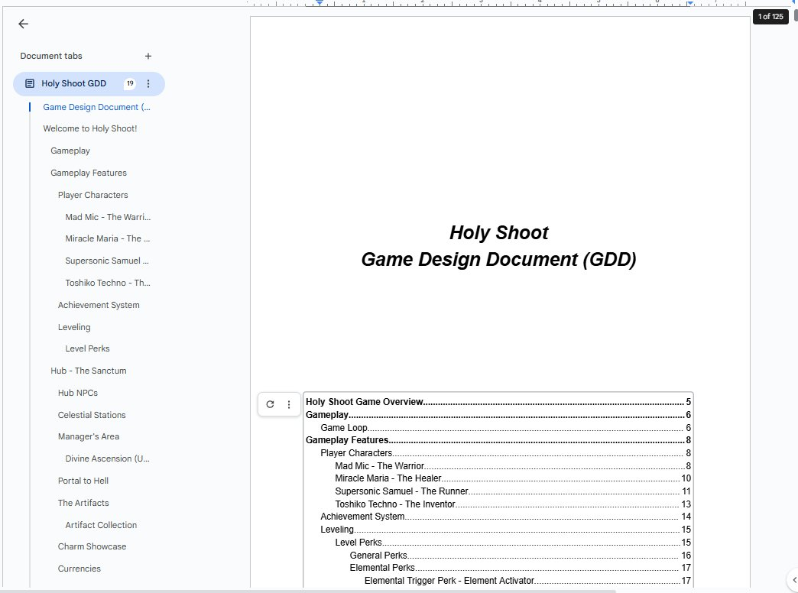
It still feels wild that this started from nothing. The GDD grew to 124 pages covering everything: theme ideas, visual and environment notes, fully detailed systems, boss VFX concepts, fight deep-dives, complete enemy rosters, weapon designs, passives, and some early concept explorations that didn't make the cut but were fun to write. It became the team's go-to reference from day one and stayed that way through shipping.
Perk & Upgrade Systems Documentation
I wanted a dev-friendly master list that made every perk, system, and challenge easy to balance, categorize, and look up. I designed, named, balanced, and documented all of them, making sure progression felt varied and nothing blurred together. Flavor text went in from the start so the tone stayed consistent whether you were reading a tooltip or a patch note.
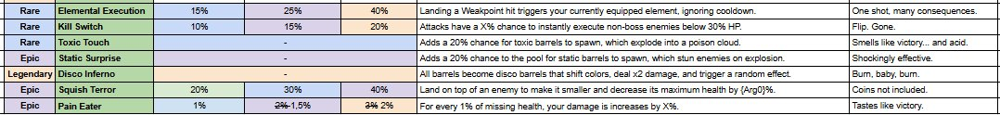
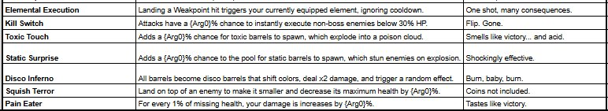
I also built a separate localization master doc using placeholder variables like {Arg0} for numerical values. This gave translators a clean, consistent source to work from across multiple languages without having to hunt through the codebase.
Icon & Perk Documentation
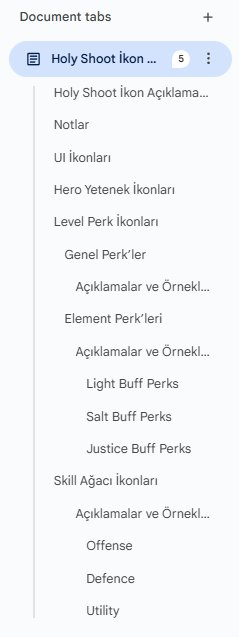
Every perk, ability, and upgrade got its own entry: name, mechanical effect, flavor text, thematic notes, and an icon reference from game-icons.net. Since the GDD was in English and some members of the art team needed Turkish explanations, I translated the relevant entries so nobody had to context-switch mid-task. The icon notes meant whoever was picking or making art had a clear creative direction without needing to ask.
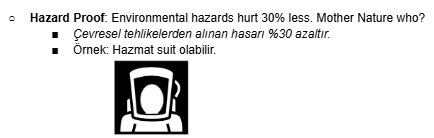
UI/UX Guides
For every HUD element, menu, and tooltip I started with function-first descriptions and then layered in thematic details to match Holy Shoot's tone. I wrote out how each screen should behave so nothing felt like it was just kind of there. To give the art team something to aim at, I pulled benchmarks from games like Tiny Tina's Wonderlands, RoboQuest, and Borderlands so we were working toward something concrete rather than vibes.
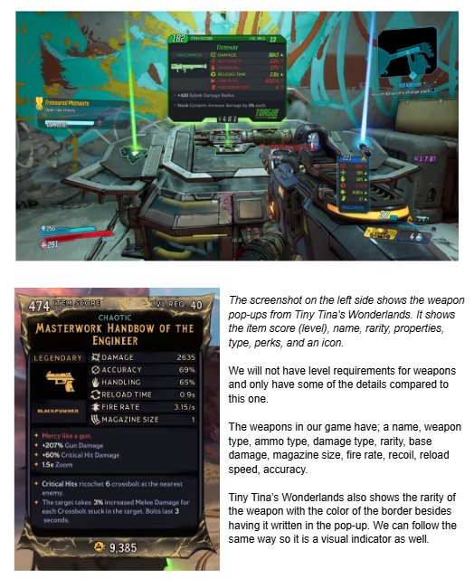
Cross-Team Clarity
Every tooltip, icon, and menu interaction tied directly back to the systems I designed, so I was the right person to write them up. Good docs take way less time than answering the same questions on loop, and they mean fewer things get built on assumptions. People still had questions and I was always happy to dig in, but the docs kept everyone moving faster.
Community
Connecting with players was one of my favorite parts of post-launch. I stayed active across Discord, Steam, and social, responding to feedback, answering gameplay questions, and joining in when players shared their wildest moments. I wrote the patch notes myself, equal parts informative and entertaining, keeping updates clear while holding onto the game's playful tone.
Whether it was bug reports, confusing mechanics, or someone leaving a spicy review, I tried to actually engage rather than just manage. You get the best feedback when players feel like someone's actually listening.
Holy Shoot was my first shipped commercial title as lead designer, and the first time I was fully in charge of both the design direction and actually keeping the project moving. The team started at around 30 people, went through layoffs mid-development, and we shipped at 13. Replanning everything around a shrinking team while still trying to make a good game was one of the harder things I've done. But we shipped. And I came out of it having learned a lot.
01 - Interesting on paper isn't the same as fun to play
Early on I designed some systems I was genuinely excited about. They had layers, they had interactions, they were clever. And then we playtested them and players were just confused.
That was a good lesson to learn early. In a roguelike especially, players are already managing a lot. If understanding a system takes effort, they'll skip it or ignore it, and all that design work just disappears. The builds that felt the best were never the most complex ones. They were the ones where two simple things combined in a way that felt like the player's own idea. I still love a layered system, but now I'm a lot quicker to ask whether the complexity is actually earning its place.
02 - The GDD is where you start, not where you finish
I came into this knowing how to write a GDD. What I got much better at was not being precious about it. Some mechanics I'd written up clearly and confidently behaved completely differently once they were in the game. Sometimes worse, sometimes actually better than I expected, but almost always different.
The shift for me was learning to treat the doc as a hypothesis and the build as the experiment. Design faster, build sooner, and if the gameplay is telling you something isn't working, listen to it instead of defending what you wrote.
03 - Replanning mid-project is genuinely hard and also genuinely useful
When the team got smaller, the project scope didn't automatically shrink with it. I had to go back through the plan, figure out what was actually essential, and have some uncomfortable conversations about things that weren't going to make it. Some of that work people had already put real time into.
What I didn't expect was how clarifying that process would be. When you're forced to cut, you figure out very quickly what the game actually is at its core. Some of those cuts hurt. But some of them made the game sharper and I don't think I would have made them otherwise.
04 - If it's only clear in your head, it's not clear yet
I knew communication mattered. What Holy Shoot taught me was how much of my job was actually translation. Taking something that made sense in my head and making it make sense to a programmer, an artist, a voice director, all working from different contexts and priorities.
The docs, the perk sheets, the icon references, the UI guides, they weren't just nice to have. On a team that size, with that much going on, ambiguity doesn't stay in one place. It spreads. Good documentation is how you stop that from happening.
05 - Players will always find something you didn't plan for
Some of my favorite playtesting moments came from watching players combine things in ways nobody on the team had tried. A perk pairing that somehow worked perfectly, a build identity that emerged from a choice we thought was niche. That kind of thing is hard to design for directly, but you can design systems that make room for it.
It's something I want to keep in mind going forward. The goal isn't to predict every outcome. It's to build something with enough internal logic that interesting things can emerge from it on their own. When players find something clever inside your system, that's usually a sign you did something right.
Even if that something is exploding a mushroom. 🍄